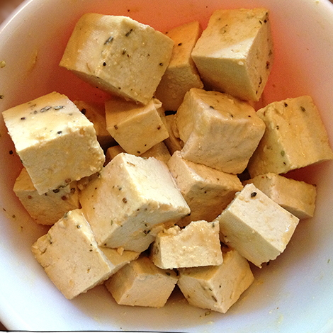
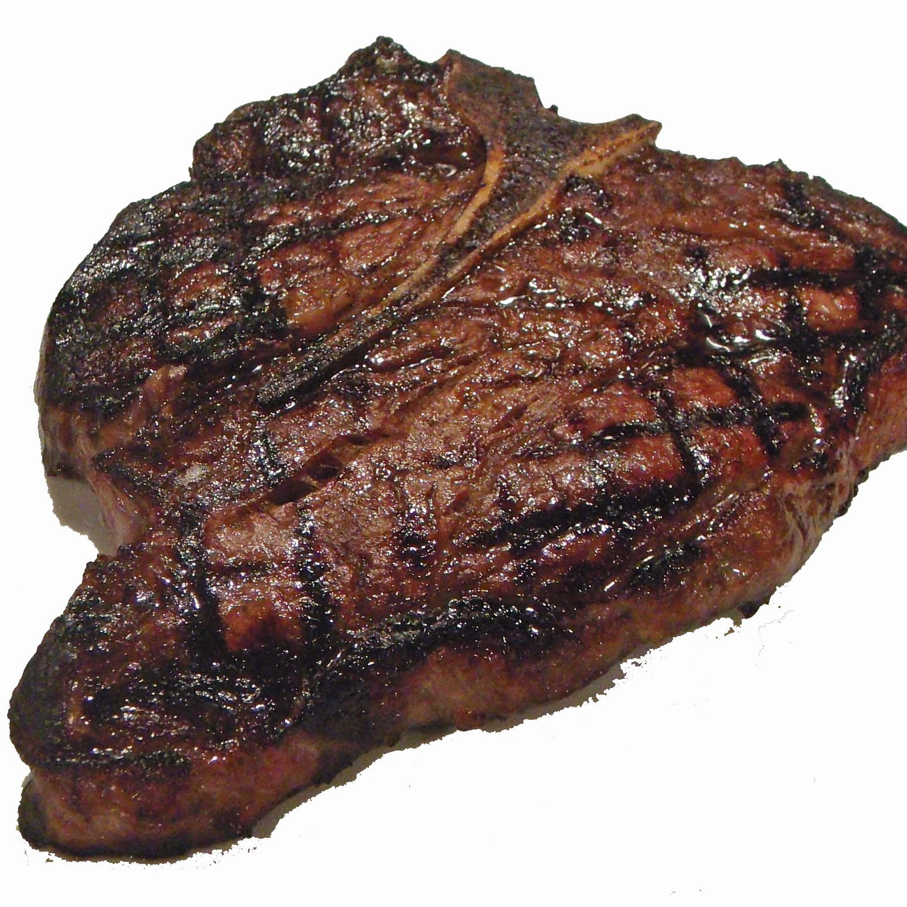

Menu of Reliability

Propositional Logic (PL)
- Representation
- Only propositions and connectives
- No way to explicitly denote objects
- Example: PUZ004-1
- Reasoning
- Decidable
- Very powerful systems based on CDCL and DPLL
- Reliability
- Representation - 10%
- Reasoning - 90%
Description Logic (DL)
- Representation
- Individuals, classes, roles
- No way to denote non-explicit objects
- Mostly fragments of FOF
- Reasoning
- Designed to be decidable and tractable
- Some standard reasoning tasks, e.g., subsumption
- Some good, some buggy, ATP systems
- Reliability
- Representation - 35%
- Reasoning - 50%

Effectively Propositional Logic (EPR)
- Representation
- No way to denote non-explicit objects
- Fragment of CNF (and FOF I guess)
- Example: PUZ128+1
- Reasoning
- Decidable
- Some specialized approaches
- Some strong ATP systems
- Reliability
- Representation - 20%
- Reasoning - 80%
Clause Normal Form (CNF)
- Representation
- Full representation of objects
- Limited connectives (wrt FOF)
- Example: PUZ021-1
- Reasoning
- Semi-decidable
- Well understood reasoning
- Mature, high-performance ATP systems
- Reliability
- Representation - 30%
- Reasoning - 70%
First-order Form (FOF)
- Representation
- Full representation of objects
- Expressive set of "natural" connectives
- Variable quantifiers
- Example: PUZ130+1
- Reasoning
- Semi-decidable
- Various techniques, mainly superposition on CNF
- Mature, fast ATP systems
- Reliability
- Representation - 50%
- Reasoning - 60%

Typed First-order Form (TF0)
- Representation
- Typed objects, connectives and quantifiers
- Types avoid representational errors
- Example: PUZ131_1
- Reasoning
- Semi-decidable
- Translation, early attempts
- Emerging modern techniques and implementations
- Reliability
- Representation - 60%
- Reasoning - 50%

Typed Extended First-order Form (TXF)
- Representation
- Typed objects, connectives and quantifiers
- Type constructors, polymorphic symbols
- FOOLish logic
- Example: PUZ081_8
- Reasoning
- Can be reduced to TFF
- Several systems in action
- Reliability
- Representation - 75%
- Reasoning - 40%

Typed First-order Form with Arithmetic (TFA)
- Representation
- Typed objects, connectives and quantifiers
- Numbers and arithmetic that reality needs
- Example: DAT002=1
- Reasoning
- Undecidable due to arithmetic
- Spurred on by SMT
- Rapidly maturing ATP systems, but a tough nut
- Reliability
- Representation - 70%
- Reasoning - 25%

Polymorphic Typed First-order Form (TF1)
- Representation (without arithmetic)
- Typed objects, connectives and quantifiers
- Type constructors, polymorphic symbols
- Getting past non-technical users
- Example: PUZ139_2
- Reasoning
- Monomorphization (sucks)
- A few implementations, not powerful (yet)
- Reliability
- Representation - 65%
- Reasoning - 35%

Typed Higher-order Form (TH0)
- Representation (without arithmetic)
- Lambda calculus and friends
- Great for mathematics and mathematicians (not people)
- Example: PUZ140^1
- Reasoning
- Very mature ITP
- Maturing ATP (but only one with arithmetic)
- Reliability
- Representation - 65%
- Reasoning - 40%

Polymorphic Typed Higher-order Form (TH1)
- Representation (without arithmetic)
- Lambda calculus and friends
- Type constructors, polymorphic symbols
- Great for mathematics and savvy mathematicians (not people)
- Example: ANA068^1
- Reasoning
- Monomorphization (sucks)
- Just a few systems (but without arithmetic)
- Reliability
- Representation - 70%
- Reasoning - 30%

Typed High-order Extended Form (TXH)
- Representation
- More than a human brain can handle
- Different flavours, and aquired taste
- Reasoning
- No trustworthy ATP (in sight)
- Reliability
- Representation - 70%
- Reasoning - 10%